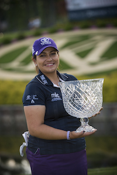

The Origin

Lizette started golfing when she was just 7 years old. She credits her dad for her accomplishments and he ha also influenced her gold career.
Her hobbies outside of golf consists of playing basketball, dance, zumba, and shopping. Her second greatest passion is Latin Dancing.
Tournaments and Victories
- 2014 - Kingsmill Championship Presented by JTBC
- Solheim Cup participant in 2013, 2015, and 2017
- In 2017 she participated in 27 events and made 24 of the 27 cuts
- She also Ranked fourth on Tour in driving accuracy (83.73%) and putting average (28.71)
Career Highlights
- In 2016 she made 24 events, 20 cuts made
- She also has accomplished finishing seventh on Tour in driving accuracy at 79.75%
- Some accomplishments she had in 2015 are
- 24 events, 22 cuts made
- Competed on her second U.S. Solheim Cup team
- Finished sixth on Tour in driving accuracy and 10th in putting average in 2015
- Crossed the $2 million mark in career earnings with a tie for second at the Meijer LPGA Classic Presented by Kraft
- She has done a lot of other awesome things in other years
Fun Facts about Lizette Salas
- She is 5’4”
- She qualified for the LPGA tour on her first attempt
- Her birthday us on July 17, 1989
- She went to college at the University of Southern California
- She is a current resident of Azusa California